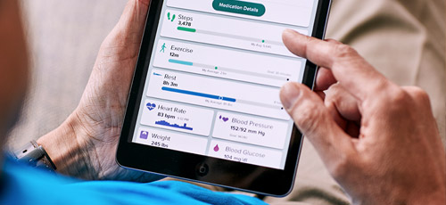

Proteus Digital Health
Background
As a Human Factors and Usability Engineering Intern, I conducted two studies in support of upcoming product launches: a remote unmoderated usability study and an evaluation of our customer support team's workflow. Due to a confidentiality agreement, only my processes are described below.
1) Remote Unmoderated Usability Study
As part of an upcoming product launch, the product team designed two prototypes and wanted to understand which user interface elicited the correct mental model and usage. To fit our time and budget constraints, we chose to conduct a remote unmoderated study with proxy participants using Userlytics. I was responsible for developing the study which included determining screening criteria for participant recruitment.
For the first part of the study, participants navigated through the entire interface. Next, they were shown two different versions of one screen they previously saw and asked for their preference and justification. Finally, participants performed a task so that I could validate that they understood the interface correctly.
Reflection
As this was my first remote unmoderated study, there was a steep learning curve to understand capabilities of the testing software to fit our study needs.
This study helped me understand some of the limitations around remote unmoderated testing and the need to have very clear, precise instructions.
2) Customer Support Team Workflow
To improve our customer support agents' internal patient information portal, I shadowed and conducted structured interviews to have a baseline understanding of their workflow and the types of issues they assist customers with. Specifically, I was interested in how they used our software.
I began by shadowing the agents as they helped customers troubleshoot issues and debriefed with them after each call. Working with the data team in parallel, I determined the top reasons customers call. In a structured interview, I proposed hypothetical situations around each of the top four caller reasons and had the agents walk me through what they would do. It was interesting to see the similarities and differences between troubleshooting in real life vs. in a simulated setting. From my research, I presented areas of opportunity to improve the next iteration of our software.

Reflection
The customer support team have significant tribal knowledge. They developed their own workarounds that were not formally documented in the manuals they are trained with. However, they know what is most efficient to get to their goal of helping patients.
As I had no prior background on this interface, I created a plan to get a baseline understanding. To do this, I first shadowed the customer support agents. I also used this opportunity to get to know the agents and develop a rapport with them so that they would be comfortable expressing their opinions later in a more formal interview setting.